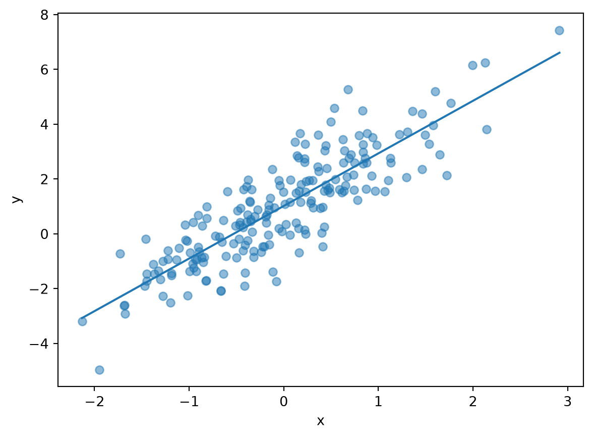

Code
import numpy as np
import pandas as pd
import matplotlib.pyplot as plt
rng = np.random.default_rng(42)One-line summary
| Citation | Author, A. (Year). Title. Journal, Vol(Issue), pages. |
| DOI / Link | https://doi.org/... |
| Field | |
| One-line summary | |
| Why read it |
The minimum background needed to understand this paper.
Explain the core method intuitively. Add equations where helpful:
\[ y_i = \beta_0 + \beta_1 x_i + \varepsilon_i \]
import numpy as np
import pandas as pd
import matplotlib.pyplot as plt
rng = np.random.default_rng(42)n = 200
x = rng.normal(size=n)
y = 1.0 + 2.0 * x + rng.normal(scale=1.0, size=n)
df = pd.DataFrame({"x": x, "y": y})
df.head()| x | y | |
|---|---|---|
| 0 | 0.304717 | 1.947009 |
| 1 | -1.039984 | 0.327514 |
| 2 | 0.750451 | 2.591487 |
| 3 | 0.940565 | 3.525068 |
| 4 | -1.951035 | -4.952242 |
beta1, beta0 = np.polyfit(df["x"], df["y"], 1)
plt.scatter(df["x"], df["y"], alpha=0.5)
grid = np.linspace(df["x"].min(), df["x"].max(), 100)
plt.plot(grid, beta0 + beta1 * grid)
plt.xlabel("x"); plt.ylabel("y")
plt.show()
| Quantity | Paper | Ours |
|---|---|---|